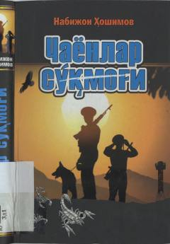

CSMustaqillik yillaridagi murakkab voqealar va vatanparvarlik haqidagi roman.
Mazkur romanda mustaqil Oʻzbekiston Respublikasiga tahdid solgan ichki va tashqi gʻanimlarning kirdikorlari, hayotda adashib yurgan ayrim yoshlarning qismati hikoya qilinadi. Shuningdek, Markaziy Osiyo xalqlari oʻrtasidagi oʻzaro doʻstlik, umumiy dushmanga qarshi hamjihatlik va Vatanga muhabbat tuygʻulari qalamga olingan.